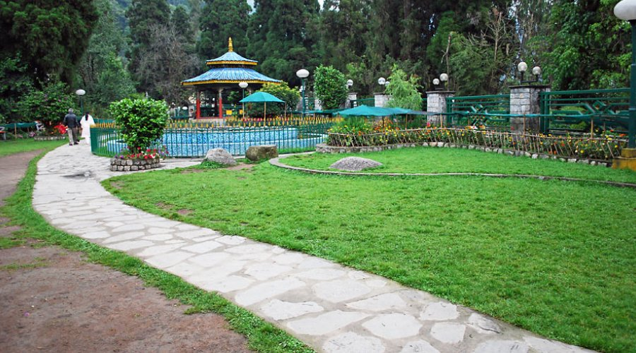
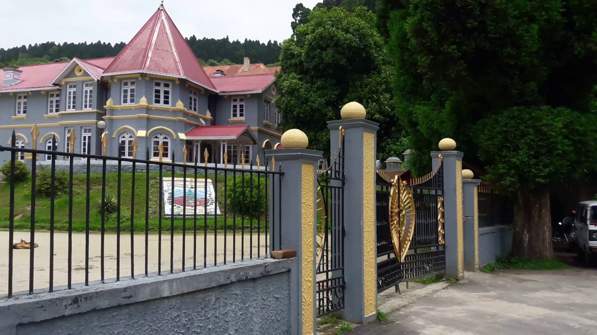
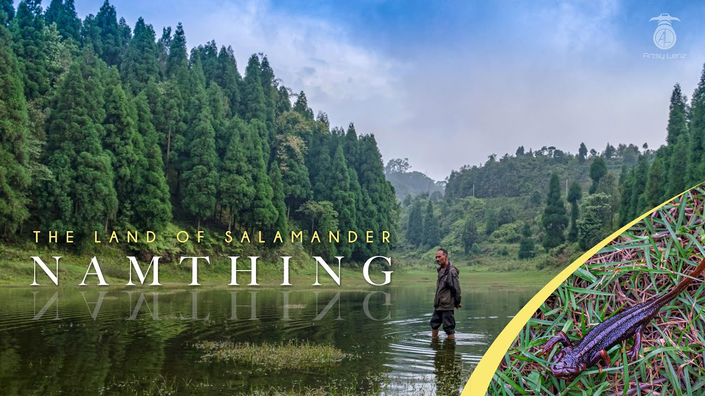
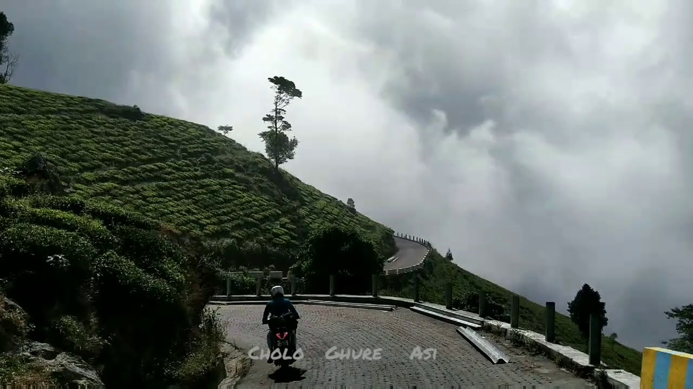

Kurseong, also known as the "Land of White Orchids," is a charming hill station in West Bengal, India. It’s a perfect getaway for nature lovers and those seeking tranquility. Here are some beautiful places to visit in Kurseong:
- Dowhill Eco Park

- Dowhill Church

- Lake

-
